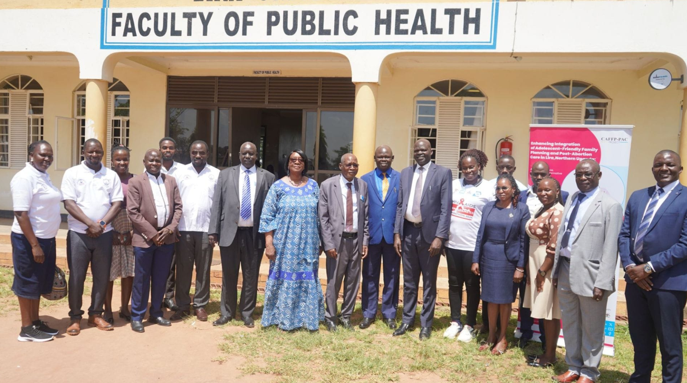

University Librarian
Dr. Andrew Ojulong
Listed on the Lira University staff directory as University Librarian.
Professional support for the Lira University community.
Profiles below use publicly listed university information. Confirm current titles and permissions before final coursework submission.
Listed on the Lira University staff directory as University Librarian.
University leadership supporting the institution's academic vision.

University staff contribute to teaching, research and student support.